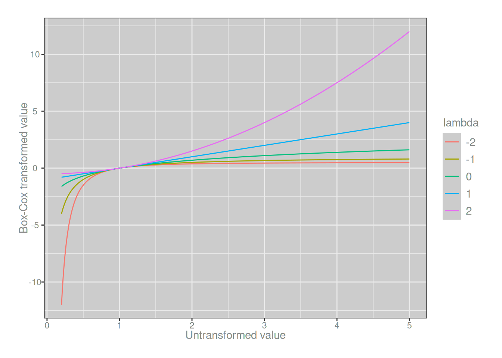
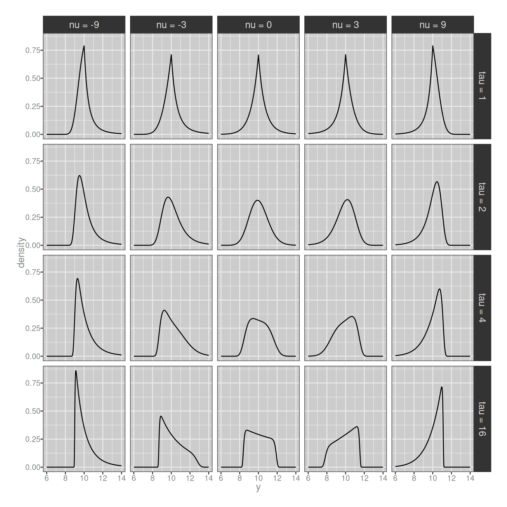
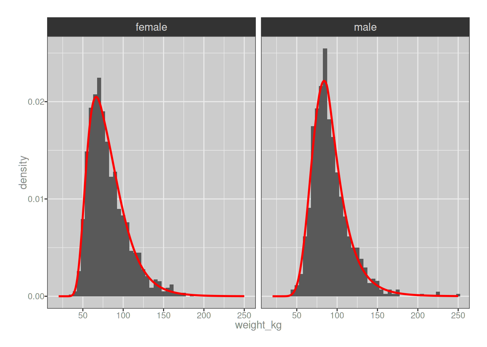

![]()
library(readr)
library(dplyr)
library(tidyr)
library(tibble)
library(ggplot2)
library(moments)
library(gamlss.dist)I have for the longest time been intending to write up some notes about generalised additive model for location scale and shape (GAMLSS) regression and its application to modelling growth curves of various kinds. It’s a problem that pops up in my pharmacometrics work every now and then, usually because we’re interested in simulating the distribution of drug exposures across some target population, often alongside distributions of efficacy and safety endpoints under some proposed dosing regimen. If a proposed dosing regimen depends on measurements such as age, weight, height, or body surface area, then it becomes important to be able to be able to say something about how these measures are distributed across the population, and have the capacity to sample from the appropriate distribution.
I mean… duh.
One of the most commonly used approaches to this problem (see discussion in Borghi et al 2005) is to use the GAMLSS framework proposed by Rigby and Stasinopoulos (2004), which in turn extends the generalised additive model and generalised linear model frameworks that I’m too lazy to reference properly in a blog post. This is the approach I’ve typically used, and I’ve found that it works rather well. Indeed, the use of GAMLSS regressions for growth curve modelling is the thing I actually want to write a blog post about, but every time I start thinking about what I want to say, I keep coming to the conclusion that the place I need to start isn’t with the regression model per se, it’s with the distributions used to describe variability in the GAMLSS framework. And so with a heavy sigh, I put aside the fun thing I want to write about, and instead decide that the thing my blog needs is…
…a tutorial introduction to the Box-Cox power exponential distribution.
Data are annoying
I’ll start with a data set I use very often when doing this kind of work: the National Health and Nutrition Examination Survey,1 2 usually abbreviated to NHANES. I’ll probably talk more about NHANES when I finally write the GAMLSS post I’ve been promising, but for now let’s just load some data that I preprocessed earlier:3
nhanes <- read_csv("nhanes-v01.csv", show_col_types = FALSE)
nhanes# A tibble: 8,403 × 6
sex_num sex_fct weight_kg height_cm age_mn age_yr
<dbl> <chr> <dbl> <dbl> <dbl> <dbl>
1 0 male 86.9 180. 516 43
2 0 male 102. 174. 792 66
3 1 female 69.4 153. 528 44
4 1 female 34.3 120. 71 5.92
5 0 male 90.6 173. 408 34
6 1 female 104. 156. 816 68
7 1 female 124. 168. 324 27
8 0 male 79.8 169. 708 59
9 1 female 123. 163. 372 31
10 1 female 116. 173. 396 33
# ℹ 8,393 more rowsSo here we have the kind of measurements you might expect to encounter when doing growth curve modelling. It’s not super fancy as such things go: I’ve got measurements for age, weight, height, and sex. To give you a sense of what the data look like here’s a scatterplot showing the joint distribution of age, weight, and sex in the data:
nhanes |>
filter(age_yr <= 50) |>
ggplot(aes(age_yr, weight_kg)) +
geom_point() +
facet_wrap(~sex_fct) +
theme_bw()There’s nothing partictularly suprising about this plot: human beings do have a tendency to get bigger and heavier until we reach adulthood, after which the changes in weight are much less dramatic. Again… duh. But the devil is in the details here. You can see just from looking at the chart that (again, obviously) the variability changes over time: adult weights are a lot more variable than infant weights. A model for this data set will necessarily need to capture that heterogeneity, otherwise it will make some hilariously wrong predictions about how heavy a baby can be.4
But if we look a little more closely, it becomes clear that capturing the mean weight and the standard deviation of the weight distribution will not be sufficient for any serious modelling purposes. To show this, I’ll simplify the data set by looking only at adults over the age range 25-49, and – not entirely accurately, as my scales pointedly remind me every morning – making the assumption that the weight distributions don’t change much over those years. After doing that we can plot good old fashioned histograms for adult weights separately for males and females:5
nhanes |>
filter(age_yr > 25 & age_yr <= 50) |>
ggplot(aes(weight_kg)) +
geom_histogram(bins = 40) +
facet_wrap(~sex_fct) +
theme_bw()Ah. Yeah, there’s no way we’re going to have much luck fitting a normal distribution to that: the distribution of body weight is positively skewed in pretty much every data set we encounter.6 So we will need a family of distributions that can capture the skewness we typically see in this kind of data.
Le sigh.
The fact that we need something more flexible seems immediately apparent, but what shall we use? In a statement of the most trite variety, let us begin by noting that if we want a family of probability distributions that is flexible enough to be able to independently describe the location (e.g., mean), scale (e.g., variance), and skewness of the data, your distributional family will require at least three parameters. There’s no escaping this: it is as inevitable as it is obvious.7 However, it’s sometimes worth stating the obvious because in doing so we can automatically rule out a great many possible candidates: for example, the log-normal distribution, much beloved by pharmacometricians in other contexts, will in this particular instance be unsuitable for our needs. The gamma distribution is likewise ruled out. Not even the Weibull distribution is spared. Something more general is required.
Enter, stage left and hopefully not pursued by a bear,8 the Box-Cox transformation and its close relative, the Box-Cox normal distribution.
The Box-Cox transformation
The story begins in a place simple enough that I used to discuss it in graduate statistics classes for social science students. Often when we encounter empirical data that are visibly and blantantly non-normal in their distribution and our toolkit is only designed to handle normally distributed data, it is common to transform the data in some fashion that makes the transformed values sufficiently close to normal that we can heave a sigh of relief, chuck the transformation into a footnote somewhere, and happily report a \(p\)-value in the paper. While such a cavalier approach to data transformation was probably not what they had in mind at the time, a widely-used approach to this problem was introduced by Box and Cox (1964), who suggested that we could compute the transformed variable \(f_\lambda(y)\) for a suitable value of \(\lambda\) as follows:9
\[ f_\lambda(y) = \left\{ \begin{array}{rl} \frac{y^\lambda - 1}{\lambda} & \mbox{ if } \lambda \neq 0 \\ \ln(y) & \mbox{ if } \lambda = 0 \end{array} \right. \]
This has since become known as the Box-Cox transformation and has been the saviour of many an otherwise doomed Ph.D. thesis. Here’s what the Box-Cox transformation looks like implemented as an R function:
boxcox <- function(y, lambda) {
if (lambda == 0) return(log(y))
(y^lambda - 1) / lambda
}It’s not very exciting, I’ll admit, but we can use it to draw a plot illustrating how the shape of the Box-Cox transformation function changes as we vary the value of \(\lambda\):
bc <- expand_grid(
y = seq(.2, 5, .01),
lambda = seq(-2, 2)
) |>
mutate(
fy = boxcox(y, first(lambda)),
.by = lambda
)
ggplot(bc, aes(y, fy, colour = factor(lambda))) +
geom_path() +
theme_bw() +
labs(
x = "Untransformed value",
y = "Box-Cox transformed value",
colour = "lambda"
)
Okay fine, that’s still not very interesting either, but I stand by my decision to include it. I like pretty pictures, okay? Not quite as much as I like pretty men, but even I struggle to find a way to turn this into a post about Hale Appleman.
The Box-Cox normal distribution
Having introduced the Box-Cox transformation, the idea of the Box-Cox normal (BCN) distribution is intuitive: if the transformed data are normally distributed, we say that the untransformed data are BCN distributed. In that sense, the Box-Cox normal has been around ever since the Box-Cox transformation was proposed in 1964. That being said, its application into the growth curve modelling literature didn’t really take off until the early 1990s, and the canonical reference for this is the paper by Cole and Green (1992). The impression I get is that it was about this time that the properties of the BCN distribution were investigated a little more explicitly. From the Wikipedia entry I was led to discover a short paper by Freeman and Modarres (2002) that provides a nice description of the BCN and its properties, and it’s from that paper that I have lifted much of this part of the blog post.
Viewed in its own terms, the BCN is a distribution over positive-valued numbers \(y\) that has probability density function
\[ p(y | \mu, \sigma^2, \lambda) = \frac{1}{k} \frac{1}{\sqrt{2\pi} \sigma} \exp\left( - \frac{1}{2\sigma^2} \left( \frac{y^{\lambda - 1}}{\lambda - 1} - \mu \right)^2 \right) \]
where \(k\) is a normalising constant given as follows:
\[ k = \left\{ \begin{array}{cl} \Phi(z) & \mbox{ if } \lambda > 0 \\ 1 & \mbox{ if } \lambda = 0 \\ \Phi(-z) & \mbox{ if } \lambda < 0 \end{array} \right. \]
As usual, \(\Phi(\cdot)\) denotes the cumulative distribution function for a normal distribution with mean 0 and standard deviation 1, and in this expression \(z = (1/(\lambda\sigma) + \mu/\sigma)\). So if for some reason we ever wanted to implement this in R ourselves, a function like this would work:
density_bcn <- function(y, mu, sigma, lambda) {
z <- 1/(lambda * sigma) + mu/sigma
if (lambda > 0) k <- pnorm(z)
if (lambda == 0) k <- 1
if (lambda < 0) k <- pnorm(-z)
const <- 1 / k / sqrt(2 * pi) / sigma
f <- lambda - 1
distr <- exp(-(1/2/sigma^2) * (y^f/f - mu)^2)
p <- const * distr
p
}Now, this is all nice and fancy and I admit I always feel reassured when I can see the analytic expression for the pdf of a distribution, but in practice it’s not really the way we think about the BCN. Instead, we usually imagine some variable \(z\) that is normally distributed with mean \(\mu\) and variance \(\sigma^2\), and then transform it as follows:
\[ \begin{array}{rcl} z & \sim & \mbox{Normal}(0, 1) \\ y & = & \left\{ \begin{array}{rl} \mu (\lambda \sigma z + 1)^{1/\lambda} & \mbox{ if } \lambda \neq 0 \\ \mu \exp(\sigma z) & \mbox{ if } \lambda = 0 \end{array} \right. \end{array} \]
The resulting variable \(y\) follows the BCN distribution with parameters \(\mu\), \(\sigma^2\), and \(\lambda\). If we were truly desperate to do so, we could write our own function that would sample from the BCN distribution:
sample_bcn <- function(n, mu, sigma, lambda) {
z <- rnorm(n, mean = 0, sd = 1)
if (lambda == 0) return(mu * exp(sigma * z))
mu * (lambda * sigma * z + 1) ^ (1/lambda)
}However, there is little need for us to do so because the gamlss.dist package in R already does it for us. In gamlss.dist this distribution is referred to as the “Box-Cox Cole and Green” distribution, in reference to the Cole and Green paper I referenced above, but the documentation notes that this is simply another name for the Box-Cox normal distribution. The two functions I wrote in the previous section are entirely unnecessary because gamlss.dist::rBCCG() and gamlss.dist::dBCCG() already do exactly that, and are much more carefully written than my lazy implementation above. To illustrate the point, here’s an example showing that sample_bcn() does the same thing as rBCCG(),
n <- 50000
dat <- tibble(
sample_bcn = sample_bcn(n, mu = 1, sigma = .1, lambda = 2),
rBCCG = rBCCG(n, mu = 1, sigma = .1, nu = 2)
)
dat |>
pivot_longer(
cols = c(sample_bcn, rBCCG),
names_to = "type",
values_to = "values"
) |>
ggplot(aes(values)) +
geom_histogram(bins = 100) +
facet_wrap(~type) +
theme_bw()and, just to make the connection even more explicit, here’s an example illustrating the connection between my rather lazy density_bcn() function and the infinitely superior dBCCG() function supplied by gamlss.dist:
dat <- tibble(
y = seq(0.4, 1.4, by = 0.01),
density_bcn = density_bcn(y, mu = 1, sigma = .1, lambda = 2),
dBCCG = dBCCG(y, mu = 1, sigma = .1, nu = 2)
)
dat |>
pivot_longer(
cols = c(density_bcn, dBCCG),
names_to = "type",
values_to = "density"
) |>
ggplot(aes(y, density)) +
geom_path() +
facet_wrap(~type, scales = "free") +
theme_bw()Well, that’s a relief. It would have been embarrassing if I’d gotten that wrong, wouldn’t it?10
So now we have a family of distributions that has one parameter describing the location (i.e., \(\mu\)), another parameter describing the scale (i.e., \(\sigma\)), and a third parameter describing the skewness (i.e., \(\lambda\)). This is good, and it will allow us to solve the problem at hand. Even better, this family of distributions has a natural connection to the Box-Cox method of data transformation that many (most?) of us encounter as graduate students, so there is a sense in which it feels quite natural. Regression models that use the Box-Cox normal distribution are often referred to as the “LMS method” for growth curve modelling. This terminology was introduced by Cole and Green (1992):
- The L parameter refers to lambda (\(\lambda\)), and captures skewness
- The M parameter refers to mu (\(\mu\)), and captures location
- The S parameter refers to sigma (\(\sigma\)), and captures scale
In the CDC growth charts for example, the “LMS” parameters refer to the parameters of the corresponding Box-Cox normal distribution associated with the relevant age group. It’s not anything mysterious, it is literally a readout of parameters for a BCN distribution, and yes, I wish someone had told this to me two years ago when I really needed this piece of information.11
The Box-Cox power exponential distribution
We are now in a position to introduce the Box-Cox power exponential (BCPE) distribution. And by “we” I of course mean Rigby and Stasinopoulos (2004), because I sure as fuck wasn’t going to do this work myself. The goal when building the Box-Cox normal (BCN) distribution was to extend the normal distribution in a way that allows us to manipulate the skewness; by analogy, the goal in building the BCPE distribution is to extend the BCN distribution to capture kurtosis.12 As such, we’ll now need four parameters to describe the distribution. I won’t go into the details of how the BCPE is constructed (it’s in the paper after all), and will instead go straight to showing you the pdf for the BCPE. The BCPE is described by a location parameter \(\mu\), a scale parameter \(\sigma\), and two shape parameters \(\nu\) and \(\tau\) that are related to skewness and kurtosis respectively. The pdf can be written as follows:
\[ p(y | \mu, \sigma, \nu, \tau) = \frac{y^{\nu - 1}}{\mu^\nu \sigma} p(z | \tau) \]
where \(z\) is a power-exponential distributed variable related to \(y\) via:
\[ z = \left\{ \begin{array}{rl} 1/(\sigma\nu) \left( (y/\mu)^\nu - 1 \right) & \mbox{ if } \nu \neq 0 \\ 1/\sigma \log (y/\mu) & \mbox{ if } \nu = 0 \end{array} \right. \]
The probability density function \(p(z|\tau)\) is given by
\[ p(z | \tau) = \frac{\tau}{c2^{1 + 1/\tau} \Gamma(1/\tau)} \exp(-0.5 |z/c|^\tau) \]
where \(c^2 = 2^{-2/\tau} \Gamma(1/\tau) (\Gamma(3/\tau))^{-1}\), and \(\Gamma(\cdot)\) is the usual gamma function. An R implementation of this terribly exciting mathematical beast is shown below:
density_bcpe <- function(y, mu, sigma, nu, tau) {
c <- sqrt(2^{-2/tau} * gamma(1/tau) / gamma(3/tau))
if (nu == 0) z <- (1/sigma) * log (y/mu)
if (nu != 0) z <- (1/(sigma*nu)) * ((y/mu)^nu - 1)
pz <- tau / (c * 2^(1 + 1/tau) * gamma(1/tau)) * exp(-0.5 * abs(z/c)^tau)
py <- pz * y^(nu - 1) / (sigma * mu^nu)
py
}Not surprisingly, my density_bcpe() function is entirely unnecessary because the gamlss.dist package already supplies the dBCPE() function which does the same job in a much better way. However, as before, I’ll do a side by side comparison to convince myself that yes, I have indeed implemented the same distribution:
dat <- tibble(
y = seq(6, 14, by = 0.1),
density_bcpe = density_bcpe(y, mu = 10, sigma = .1, nu = 2, tau = 5),
dBCPE = dBCPE(y, mu = 10, sigma = .1, nu = 2, tau = 5)
)
dat |>
pivot_longer(
cols = c(density_bcpe, dBCPE),
names_to = "type",
values_to = "density"
) |>
ggplot(aes(y, density)) +
geom_path() +
facet_wrap(~type, scales = "free") +
theme_bw()Okay. Fabulous. My code works. But gosh, that is a peculiar looking density, isn’t it? The BCPE family is quite flexible, and can produce a surprising range of shapes depending on the parameters you supply. To give you a sense of it, here’s a quick tour of some part of the parameter space. I’ll fix the \(\mu\) and \(\sigma\) parameters for this example, and focus on the two shape parameters \(\nu\) and \(\tau\):
y_val <- seq(6, 14, 0.01)
nu_val <- c(-9, -3, 0, 3, 9)
tau_val <- c(1, 2, 4, 16)
dat <- expand_grid(y = y_val, mu = 10, sigma = .1, nu = nu_val, tau = tau_val) |>
mutate(
density = dBCPE(y, mu, sigma, nu, tau), .by = c("mu", "sigma", "nu", "tau"),
nu_lbl = factor(nu, levels = nu_val, labels = paste("nu =", nu_val)),
tau_lbl = factor(tau, levels = tau_val, labels = paste("tau =", tau_val))
)
dat |>
ggplot(aes(y, density)) +
geom_path() +
facet_grid(tau_lbl ~ nu_lbl) +
theme_bw()
Intuitively, you can see what they parameters are doing:
- Approximately speaking, the role of \(\nu\) is to control skewness. When \(\nu = 0\) the distribution is approximately symmetric13, when \(\nu < 0\) the distribution has positive skewness14 and when \(\nu > 0\) the distribution has negative skewness.
- Again speaking approximately, the role of \(\tau\) is to control kurtosis. When \(\tau = 2\) the distributions are mesokurtic: the tails are about as heavy as the tails of a normal distribution. When \(\tau < 2\) the distribution is leptokurtic: kurtosis is high, and the tails are heavier than the tails of a normal distribution. When \(\tau > 2\) the distribution is platykurtic: kurtosis is low, and the tails are lighter.
Fitting the BCPE
As a final exercise, I’ll implement a simple method for finding maximum likelihood estimates of the BCPE distribution parameters. My approach here is absolutely not recommended in a real life setting: I’m using the optim() function with the "L-BFGS-B" method. For this specific example it works well, but the impression I get is that it can be a bit fragile because fitting a kurtosis parameter is not a trivial thing to do: when estimating a GAMLSS model with BCPE distribution there are better tools than an off-the-shelf optimiser. But that is a topic for another day, and having made the required disclaimer, let’s do the lazy thing anyway:
nll <- function(values) {
function(par) {
-sum(dBCPE(
x = values,
mu = par[1],
sigma = par[2],
nu = par[3],
tau = par[4],
log = TRUE
))
}
}
fit <- function(x) {
optim(
par = c(mu = 70, sigma = .1, nu = 0, tau = 2),
fn = nll(x),
lower = c(mu = 40, sigma = .01, nu = -10, tau = .01),
upper = c(mu = 100, sigma = 50, nu = 10, tau = 10),
method = "L-BFGS-B"
)
}When calling nll() with a vector of values it returns an objective function for optim() to minimise, based on the negative log-likelihood. The wrapper function fit() calls optim() and returns the result. Here are the parameter estimates we obtain when fitting the BCPE distribution to adult male weights:
weight_m <- nhanes |>
filter(age_yr > 25, age_yr <= 50, sex_fct == "male") |>
pull(weight_kg)
par_m <- fit(weight_m)$par
par_m mu sigma nu tau
87.6094265 0.2319320 -0.5234904 1.6945917 To help us interpret these parameters it’s useful to mention that (as discussed by Rigby and Stasinopoulos, 2004, Appendix A) the \(\mu\) parameter is approximately equal to the population median and \(\sigma\) is approximately the coefficient of variation, but while there are relationships between \(\nu\) and skewness and between \(\tau\) and kurtosis, they are a little more opaque. To illustrate:
c(
median = median(weight_m),
cv = sd(weight_m) / mean(weight_m),
skewness = skewness(weight_m),
kurtosis = kurtosis(weight_m)
) median cv skewness kurtosis
87.2500000 0.2565488 1.5355721 7.9690289 It’s pretty clear that you can interpret \(\mu\) and \(\sigma\) with little difficulty, but interpreting the two shape parameters \(\nu\) and \(\tau\) requires some care. It seems to me that any time you estimate parameters for a BCPE distribution you should always plot the density (see below!). The BCPE is a complicated beast: don’t assume you know how to interpret the parameters until you’ve seen the density function that they produce! In any case, let’s move forward and repeat the fitting exercise for the female body weight data:
weight_f <- nhanes |>
filter(age_yr > 25, age_yr <= 50, sex_fct == "female") |>
pull(weight_kg)
par_f <- fit(weight_f)$par
par_f mu sigma nu tau
76.4064873 0.2699057 -0.5469284 2.3326601 Okay yes, that seems sensible enough. Calculating descriptive statistics for the female body weights shows the same pattern as for the male weights:
c(
median = median(weight_f),
cv = sd(weight_f) / mean(weight_f),
skewness = skewness(weight_f),
kurtosis = kurtosis(weight_f)
) median cv skewness kurtosis
75.1000000 0.2969981 1.1552950 4.4436285 Just to be sure that this has worked – and to follow my own advice from a couple of paragraphs prior – let’s plot the estimated BCPE densities (red curves) on top of a simple histogram-based density estimate (grey bars) for these two data sets:
pred_wide <- tibble(
weight_kg = 20:250,
male = dBCPE(weight_kg, par_m[1], par_m[2], par_m[3], par_m[4]),
female = dBCPE(weight_kg, par_f[1], par_f[2], par_f[3], par_f[4])
)
pred_long <- pred_wide |>
pivot_longer(
cols = c(male, female),
names_to = "sex_fct",
values_to = "density"
)
nhanes |>
filter(age_yr > 25 & age_yr <= 50) |>
ggplot(aes(weight_kg, after_stat(density))) +
geom_histogram(binwidth = 5, center = 0) +
geom_path(
data = pred_long,
mapping = aes(weight_kg, density),
colour = "red",
linewidth = 1
) +
facet_wrap(~sex_fct) +
theme_bw()
Very nice. This fit is close enough that I would feel quite comfortable using these BCPE distribution in a simulation. Which is, of course, the point.
Summary
There’s a lot I could say on this topic. The BCPE is a very powerful and useful tool and I am very grateful it exists. I use it regularly. Nevertheless…
Footnotes
Yes, it’s an American data set. You can tell by the fact that it uses the word “national” in the title, without perceiving that there might be a need to specify which of the literally hundreds of nations on this planet the word refers to. It takes a certain kind of insular psychology to do this, which very quickly narrows down the list of possible culprits. Suffice it to say, the citizens of every other nation besides the one that always does this find it extraordinarily annoying.↩︎
Okay this might not be entirely fair of me, especially since the English are pretty bad on this front also, but honestly it happens often enough that I feel obliged to write a snarky footnote.↩︎
If you must know, this is a subset constructed from the
DEMO-L.xptandBMX-L.xptdata cuts for demographics and body measurements in the post-pandemic 2021-2023 release. But more on that in the promised GAMLSS post: the NHANES data is too awesome to be relegated to a mere footnote in a post on the BCPE distribution.↩︎I have a funny story to tell about a GAMLSS model that I fit to NHANES data, in which my first attempt was rather ambitiously trying to do something fancy with the shape parameters of the BCPE distribution and I got burned: the bloody thing was convinced that a few female babies (and only female babies) could in fact be born 100cm or so in length and… look, either we’re talking about a xenomorph situation here or I fucked up the model.↩︎
As always, I shall add the relevant “trans and intersex disclaimer”: this is not the time and place to discuss nuance around gender and sex characteristics. These things do matter, but they aren’t in the NHANES data nor does the Box-Cox power exponential distribution have anything useful to say on the topic, and with this in mind we shall move forward unburdened by such complexities.↩︎
To a pharmacometrician (as I now apparently am), this is a “well duh” kind of thing to say, because a shockingly large number of the variables we typically deal with in this field are right-skewed and are usually fit with log-normal distributions. In psychology, the discipline from which I emerged like some kind of twisted transsexual moth, it might be more of a surprise because unless you have been cursed with the knowledge of how to model reaction time distributions (sadly, like most mathematical psychologists, I have been so cursed) you might be used to data that are typically normal, or approximately so.↩︎
This is assuming you’re not doing something ridiculous with your parameters. There are malicious ways of making one parameter do the work of more (see Piantidosi, 2018 if you absolutely must), but to do so you have to create parameters that don’t mean anything. It’s a silly exercise, and we will not be engaging in that kind of chicanery here. We want to capture three properties: we will use three parameters. The end.↩︎
Alas, the Box-Cox power exponential was the bear. I prefer twink distributions myself, but I’m no bigot and my tastes are broad.↩︎
Actually, if you look at the original paper they also suggest a two-parameter version of the transformation that includes an offset parameter, but I won’t trouble myself with that version in this post.↩︎
For the record: in the process of writing this blog post I did indeed get it wrong several times. The real reason why I included the comparison between my functions and the proper ones is that I have learned from bitter experience that it usually takes me several attempts to correctly understand the underlying statistical concepts and implement them as functions, so I make certain to include cross-checks like this every single time.↩︎
Perhaps the CDC could have… idk… put that little snippet of information on the website rather than assume that everyone knows that LMS is a synonym for BCN, and maybe someone else could have mentioned that BCCG is also a synonym for BCN? It gets very confusing when the connections aren’t stated explicitly. Just sayin’↩︎
In fact, the BCPE distribution wasn’t even their first attempt at addressing the problem: in an earlier paper they introduced the Box-Cox t-distribution, which has the same goal as BCPE of allowing kurtosis to be modelled, but it’s a different entity and is more restricted than the BCPE.↩︎
Yes, I know, what the fuck is going on in the bottom row? The key thing to remember here is that the BCPE is a distribution over the positive reals, and that can have some counterintuitive effects when you ramp up kurtosis. It is best, therefore, to remember that \(\nu\) is only “approximately” a descriptor of symmetry. Rigby and Stasinopoulos discuss this in Appendix A in the paper, where they point out that the actual behaviour of the shape parameters is a little more nuanced. The thing that you’re seeing in the bottom row is exactly the phenomenon they refer to.↩︎
Again: yes, I know, I know, the directions are flipped. I didn’t design this thing okay, I’m just trying to make it make sense.↩︎
Reuse
Citation
BibTeX citation:
@online{navarro2025,
author = {Navarro, Danielle},
title = {The {Box-Cox} Power Exponential Distribution},
date = {2025-08-02},
url = {https://blog.djnavarro.net/posts/2025-08-02_box-cox-power-exponential/},
langid = {en}
}
For attribution, please cite this work as: